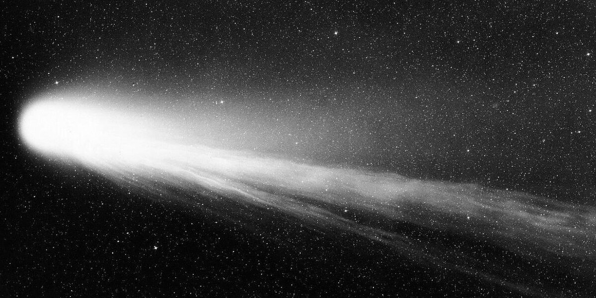

Цере́ра — наименьшая среди известных карликовых планет Солнечной системы. Расположена в поясе астероидов.
Церера была открыта в 1801 году итальянским астрономом Джузеппе Пьяцци в Палермской астрономической обсерватории.
Некоторое время Церера рассматривалась как полноценная планета Солнечной системы; в 1802 году она была классифицирована как астероид, но продолжала считаться
планетой ещё несколько десятилетий, а по результатам уточнения понятия «планета» Международным астрономическим союзом 24 августа 2006 года на XXVI Генеральной Ассамблее МАС была отнесена к карликовым планетам.
Джузе́ппе Пья́цци — итальянский астроном, математик и священник.
Член Лондонского королевского общества (1804), иностранный член Парижской академии наук.
Первооткрыватель карликовой планеты Цереры. 1 января 1801 году открыл новое светило, орбита которого, впервые вычисленная Гауссом, оказалась расположенной между орбитами Марса и Юпитера.
Пьяцци назвал новую планету Церерой в честь богини плодородия и земледелия — покровительницы Сицилии.

Комета Галлея - Является первой кометой, для которой определили эллиптическую орбиту и установили периодичность возвращений.
Названа в честь английского астронома Эдмунда Галлея. С кометой связаны метеорные потоки эта-Аквариды и Ориониды. Несмотря на то,
что каждый век появляется много более ярких долгопериодических комет, комета Галлея — единственная короткопериодическая комета,
хорошо видимая невооружённым глазом. Начиная с древнейших наблюдений, зафиксированных в исторических источниках Китая и Вавилона,
было отмечено по меньшей мере 30 появлений кометы.
Э́дмунд Галле́й — английский астроном, геофизик,
физик и демограф, внёс крупный вклад во все перечисленные науки. Наиболее известен исследованиями кометы, которой присвоено его имя —
Галлей показал периодичность её появления и высказал мнение об аналогичном поведении других комет
С именем Эдмунда Галлея связан и коренной перелом в представлениях о кометах. В Новое время до Ньютона все считали их чужеродными
странниками, лишь пролетающими сквозь Солнечную систему по незамкнутым параболическим орбитам.